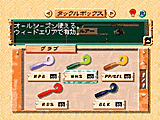
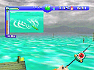
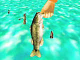

1999 Nintendo/HAL Laboratory,Inc./Shigesato Itoi 1999 Nintendo/HAL Laboratory,Inc./Shigesato Itoi |
| 2000年4月発売予定 ●振動パック対応 |
| 「ゲームのウソっぽさ」の無いよう“バス釣りの基本”をちゃんと作っているから、今までの釣りゲームとは一線を画す「本物の釣り」が楽しめます。ルアーの動きがとにかくリアル 。3Ｄスティックで思うままに動かせます。 |
| 水上カメラではファイトに必要な情報（ライン・竿先・魚の行方）を表示。水中カメラではルアーのアピール動作を確認、バスの動きを表示。同時表示でゲームのやりやすさを向上させました。 |
| 釣りに熱中していて、気がつくと・・・朝もやが晴れ、雨が降り出したり、夕暮れになっていたり。また、自由に歩き回ることの出来る3Ｄ空間は、前作以上に自然に包まれている感覚が楽しめます。ゲームを進めていくうちに、都会にいるのがいやになってしまうかも？ |
|  |  |  |
| ※画面は全て開発中のものです。 | ||
| キャラクターはスーパーファミコン版「糸井重里のバス釣りNo.1」のパッケージでおなじみだった“ひこねのりお”さんのほのぼのした動物たち。初心者の子供たちから腕自慢のお父さんまで、家族みんなで楽しんでもらえます。 |